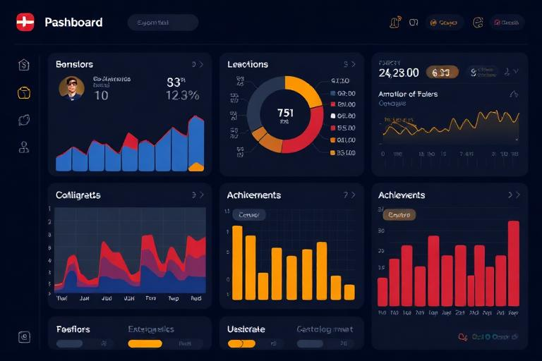
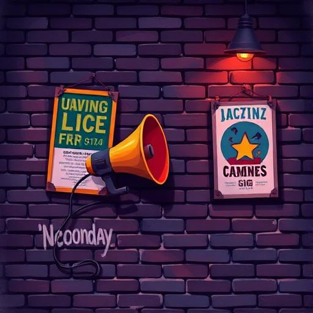

Commercial music
Releases, Streaming & Charts
A release is the bridge between a recording and an audience. RockMundo models that audience through several connected systems—streaming, sales formats, charts, fans, media, live activity and wider world momentum—so releasing music is a campaign rather than a one-click income generator.
In brief
Record suitable material, choose the release type, make sensible format/distribution decisions, support it with promotion and live activity, then track streams, sales and chart movement over time. A release can keep generating activity after launch rather than disappearing at midnight.
Singles, EPs and albums
Different release sizes serve different purposes. A single concentrates attention and is easier to support with a small catalogue. An EP lets you present more material without the scale of a full album. Albums can create a major career moment but ask more of your recordings, planning and promotion.
Single
Useful for introducing new material, maintaining momentum or focusing promotion around one key song.
EP
A middle ground for artists who want a broader statement without the full commitment of an album campaign.
Album
Best treated as a significant catalogue and marketing event rather than simply the largest container available.
Release strategy
There is no universal best sequence. Your catalogue, fanbase, budget, touring plans and creative goals should shape the choice.
Formats and distribution
RockMundo can represent music through streaming and sale formats such as digital and physical products. Formats may have different economics and audience behaviour, so the practical question is whether a format fits the artist and campaign rather than whether one format always wins.
How to think about streaming

Streaming performance is intended to feel connected to the popularity and momentum of the music career. Stronger music, more audience awareness, fan growth, promotional activity and wider success can all help create better conditions for listening.
Do not treat the first day as the entire life of a track. Releases can continue to accumulate activity, especially when something else gives listeners a reason to return—new publicity, gigs, chart movement or a growing artist profile.
Record sales
Sales provide a different commercial signal from streams. Formats can have their own demand and economics, and successful artists may see a mix rather than one identical audience behaviour across every format.

Promotion creates reasons to listen
Public relations, media appearances, self-promotion, social activity and live shows can all contribute to the story around a release. Think of promotion as creating opportunities for the audience to notice the music rather than as purchasing guaranteed streams.


Charts and World Pulse
Charts summarise competitive performance across the world. Depending on the chart, streams, sales, geography, time period or other eligible activity can matter. World Pulse provides a broader sense of what is moving in the world.

Reading your results
- Compare streams and sales rather than looking at only one number.
- Watch how performance changes after gigs or promotional events.
- Consider whether growth is local, national or broader.
- Look for catalogue effects: an audience finding one release may discover older music too.
- Do not assume a quiet launch means the song can never gain momentum later.
- Use the data to inform the next campaign, not to reverse-engineer hidden coefficients.